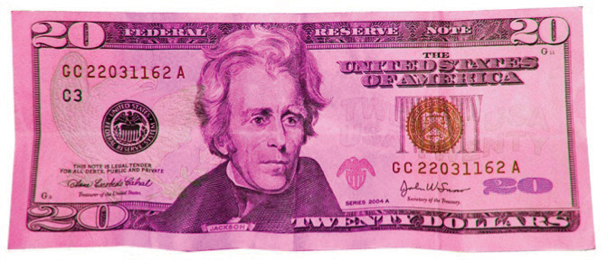
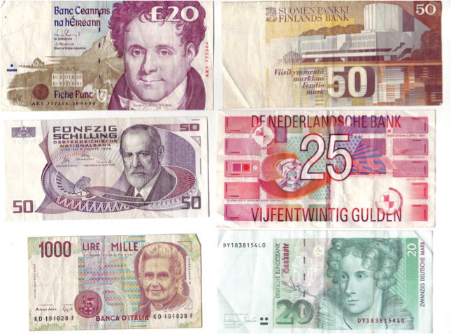

You wake up one morning, drag yourself out of bed, and, bleary-eyed, throw on some clothes. You stumble out of your apartment and across the road to your neighborhood coffee shop. “Coffee, please,” you say to the barista, those being the only two words that you are capable of getting out of your system before you get some caffeine into it. She pours a cup of the coffee of the day and places it on the counter in front of you. Just smelling the coffee makes you feel a little bit better already.
“That’ll be a dollar.” You reach into your pocket, pull out a crumpled twenty, hand it to her, and reach for the cup. “I’m sorry,” she says, pulling the cup away from you, “I can’t accept that.” “Why on earth not?” you ask, bemused. “It’s the wrong color,” she says. “You could have used that yesterday, but—look—this is what bills look like now.” And she reaches into her register and shows you a bright purple $20 bill, like the one in the following figure .
Figure 24.1 The New $20 Bill
Imagine if you woke up one morning and found that all money was now this color.
In this story, normal green dollar bills were accepted as money yesterday, while purple dollar bills were worthless colored pieces of paper. But today, purple dollar bills are accepted as money, and green dollar bills are just worthless pieces of paper. This sounds absurd. Yet it is not so far from what happened in a dozen different countries on January 1, 2002. If you had awakened in Italy on that day and gone down the street to a neighborhood café, you would have noticed that the simple act of buying coffee had changed from the day before. Your local café still looked as it did on December 31, 2001. But where you had previously paid with notes and coins called Italian lira, you would now pay with a completely new currency called the euro.
The same was true in France, Finland, Germany, Greece, and seven other European countries. On that day, 12 countries all officially gave up their own currencies and instead adopted a common currency—the euro. Admittedly, the transition was not quite as stark as in our story: there was a period of about 2 months in which euros and the old local currencies both circulated. But the essence is the same. At one time, euro notes were just colored pieces of paper that shopkeepers would not accept for transactions. Then, not that long afterward, those colored pieces of paper became valuable, while the old currencies turned into worthless pieces of paper.
This was an amazing event for the international economy. Familiar currencies like the French franc, the German deutschmark, the Greek drachma, and the Spanish peseta simply disappeared. The following figure shows some of these vanished currencies. Some of the world’s largest economies changed their currency.In Chapter 30 "The Global Financial Crisis", we take up another aspect of this event: what it means for a country to disband its central bank and delegate monetary policy to a centralized entity. To make sense of this event, we need to answer a disarmingly simple-looking question, which is the theme of this chapter:
Why do people want to hold apparently worthless pieces of paper?
Figure 24.2 Some Vanished Currencies
Here are some of the banknotes that disappeared from circulation in Europe upon the advent of the euro.
Understanding what happened in Europe requires us to answer two more basic questions:
What is money? and Why is it valuable?
We begin this chapter by looking at what makes something a money. Surprisingly, this is not straightforward: we will see that money has several attributes, and many different things can act as money. Then we look at what we can do with money. We use money to buy goods and services, we use money to buy other kinds of money, and we use money to buy money in the future.
Before exploring the world of money, we need to make one clarification. In everyday language, if you bought a camera for $200 and sold it for $300, we would say that you made money from the deal. Economists, however, use the term money more precisely, in ways that we make clear in this chapter. An economist would say that your resale of the camera earned you income, and you received that income in the form of money.